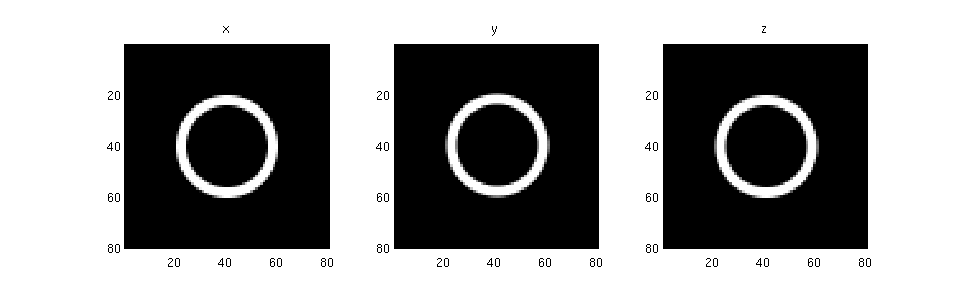

solve_2D_example
Shows how a 2D FDFD simulation can quickly be solved locally in Matlab.
Contents
Create the simulation
We use the add_planar and stretched_coordinates functions to create our structure as well as our simulation grid.
dims = [80 80 1]; % Size of the simulation. omega = 0.18; % Frequency of the simulation. % Create a ring epsilon structure. my_shapes = {struct('type', 'rectangle', ... 'position', [0 0], ... 'size', [1e9 1e9], ... 'permittivity', 1), ... struct('type', 'circle', ... 'position', [0 0], ... 'radius', [20], ... 'permittivity', 12.25), ... struct('type', 'circle', ... 'position', [0 0], ... 'radius', [16], ... 'permittivity', 1)}; epsilon = {ones(dims), ones(dims), ones(dims)}; epsilon = add_planar(epsilon, 1e9, 1, my_shapes); % Plot the structure. xyz = 'xyz'; for k = 1 : 3 subplot(1, 3, k); imagesc(epsilon{k}'); axis equal tight; title(xyz(k)); colormap gray end snapnow; % Create the s-parameters. [s_prim, s_dual] = stretched_coordinates(omega, dims, [10 10 0]); % Create the current source. J = {zeros(dims), zeros(dims), zeros(dims)}; J{1}(22, 40, 1) = 1; % Point source inside ring. % Permeability. mu = {ones(dims), ones(dims), ones(dims)};
Form matrices and solve
We now form the necessary linear algebra components and solve the system using standard Matlab tools.
% Get ingredient matrices and vectors. [A1, A2, m, e, b] = maxwell_matrices(omega, s_prim, s_dual, mu, epsilon, J); % Form full matrix. n = prod(dims); A = A1 * spdiags(m.^-1, 0, 3*n, 3*n) * A2 - omega^2 * spdiags(e, 0, 3*n, 3*n); % Solve x = A \ b; fprintf('Error: %e\n', norm(A*x-b)/norm(b)); % Reshape solution and plot it. for k = 1 : 3 E{k} = reshape(x((k-1)*n+1 : k*n), dims); subplot(1, 3, k) imagesc(real(E{k})'); axis equal tight; title(xyz(k)); colormap jet end snapnow;
Error: 9.716133e-16

We see that our point source excitation has weakly coupled to a ring mode. As expected, the Ez component is unexcited since, in two dimensions, it is uncoupled from the Ex and Ey components.